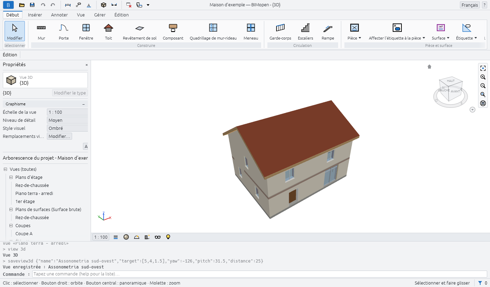
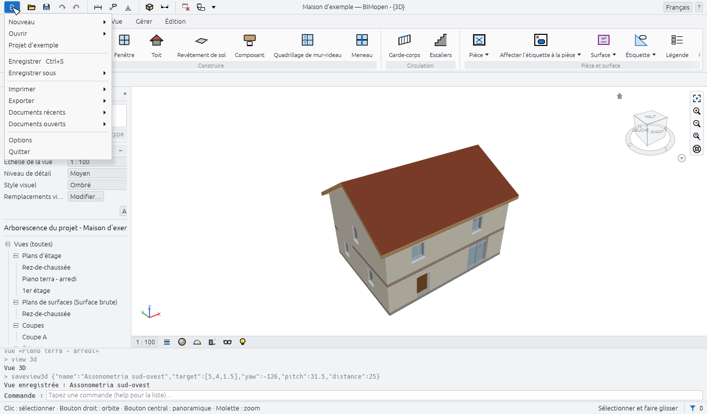
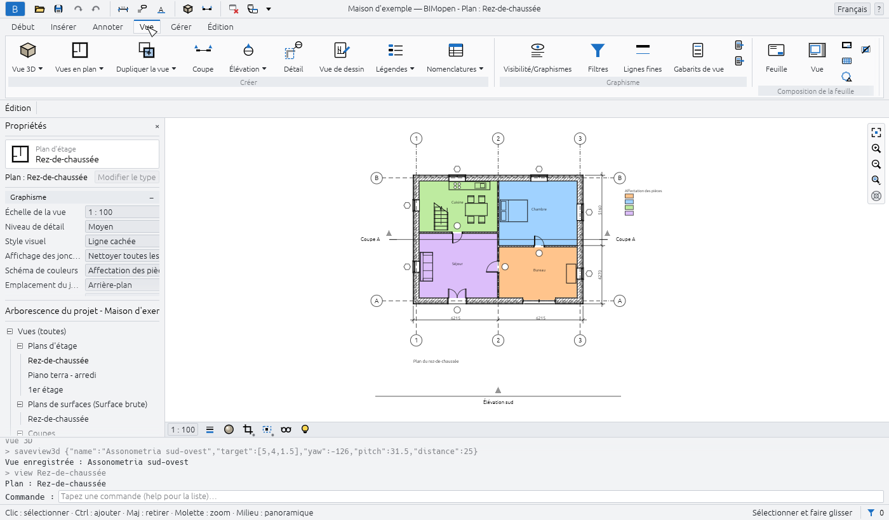
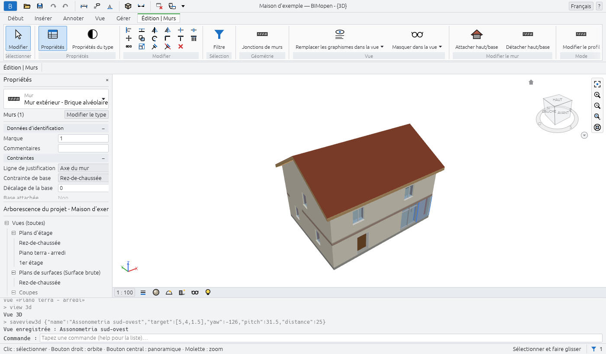
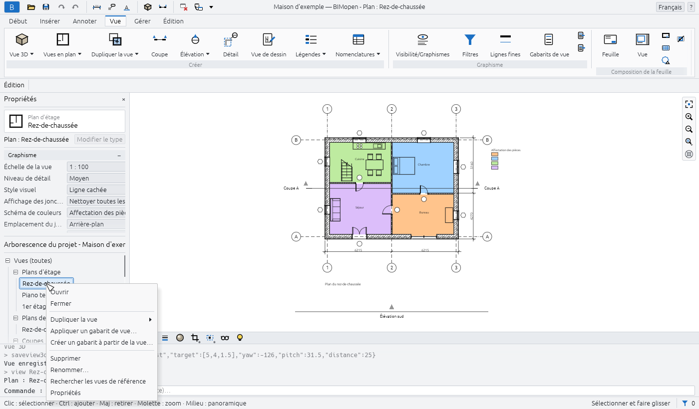
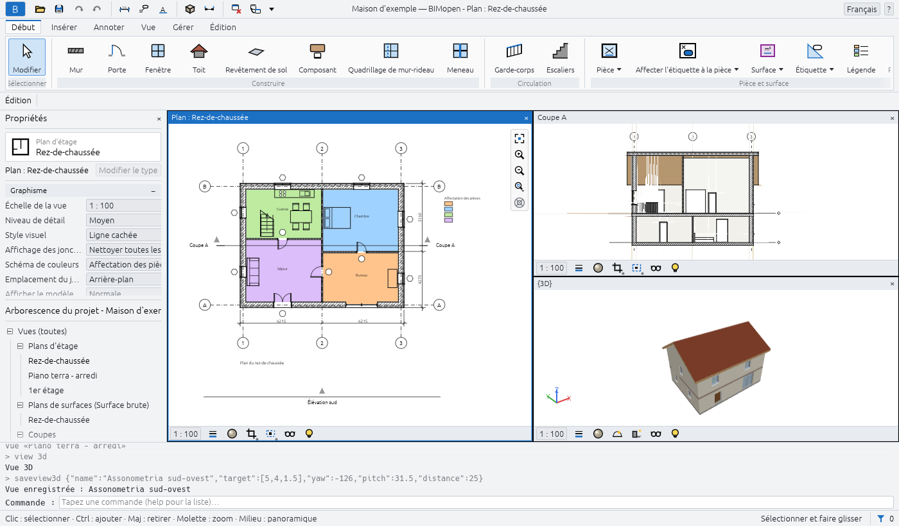
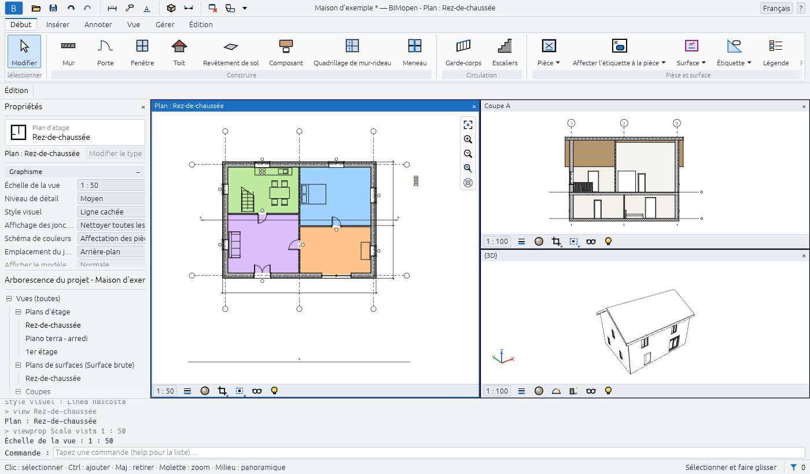

L'interface
La fenêtre de BIMopen comporte les mêmes parties dans la version de bureau et dans la version web. De haut en bas :
- la barre de titre, avec le menu de l'application, la barre d'outils d'accès rapide, le nom du projet et de la vue active, le menu des langues et le menu d'aide ;
- le ruban, avec ses onglets et ses groupes d'outils ;
- la barre des options, avec les réglages de l'outil actif ;
- à gauche, la palette Propriétés au-dessus de l'Arborescence du projet ;
- la zone de dessin, où les vues s'ouvrent dans des fenêtres, chacune avec sa barre de contrôle d'affichage ;
- la ligne de commande, avec le journal de ce qui a été fait ;
- la barre d'état.

Les palettes gardent leur largeur quoi qu'elles affichent : un nom long est raccourci par « … » et son info-bulle le montre en entier. Faites glisser le bord des palettes pour les élargir ou les rétrécir, et la ligne entre Propriétés et l'Arborescence du projet pour partager la hauteur ; BIMopen retient les deux pour la session suivante. Dans le style BIMopen, le panneau d'outils et le panneau d'élément fonctionnent de la même façon.
En arabe, toute la fenêtre est inversée en miroir : les palettes sont à droite, le ruban et la barre des options se lisent de droite à gauche, et la barre de navigation se trouve sur le bord gauche des vues.
Menu de l'application
Le bouton bleu B à l'extrémité gauche de la barre de titre ouvre le menu de l'application : les commandes qui agissent sur l'ensemble du projet.

| Élément | Action |
|---|---|
| Nouveau | Ferme le projet en cours et en démarre un nouveau à partir du gabarit par défaut : deux niveaux avec leurs plans, et les types par défaut |
| Ouvrir… | Ouvre un projet .bimopen, ou importe un modèle .rvt, choisi dans une boîte de dialogue de fichier. Dans le navigateur, faites plutôt glisser le fichier dans la page |
| Projet d'exemple | Ouvre la maison d'exemple |
| Enregistrer Ctrl+S | Enregistre le projet dans son fichier ; un projet jamais enregistré demande un nom, comme Enregistrer sous… |
| Enregistrer sous… | Enregistre le projet dans un nouveau fichier .bimopen et continue à travailler sur ce fichier |
| Imprimer… Ctrl+P | Imprime des feuilles en PDF |
| Exporter ▸ Exporter IFC4… | Écrit le modèle sous forme de fichier IFC4 |
| Exporter ▸ Exporter le plan SVG… | Écrit le plan actif sous forme de dessin SVG |
| Exporter ▸ Exporter la vue PNG… | Écrit la vue active sous forme d'image PNG |
| Documents ouverts | Répertorie les fenêtres de vue ouvertes ; cliquez sur l'une d'elles pour l'amener au premier plan |
| Options | Ouvre la boîte de dialogue Options |
| Quitter | Ferme BIMopen (version de bureau uniquement) |
Nouveau, Ouvrir… et Projet d'exemple remplacent le projet en cours sans demander de confirmation : enregistrez-le d'abord si vous souhaitez le conserver.
Warning
Les modifications non enregistrées sont perdues lorsque vous choisissez Nouveau, Ouvrir… ou Projet d'exemple. L'astérisque après le nom du projet dans la barre de titre vous indique qu'il y a des modifications non enregistrées.
Options
Menu de l'application ▸ Options comporte deux groupes :
| Réglage | Valeurs | Effet |
|---|---|---|
| Interface utilisateur ▸ Langue | Italiano, English, Deutsch, Français, Español, العربية | La langue de toute l'interface, immédiatement |
| Interface utilisateur ▸ Thème | Clair, Sombre | Les couleurs de la fenêtre. Sombre active aussi Inverser la couleur d'arrière-plan |
| Graphisme ▸ Inverser la couleur d'arrière-plan | activé, désactivé | Des vues avec un arrière-plan sombre et des lignes claires |
BIMopen mémorise la langue et le thème pour le prochain démarrage.
Barre d'outils d'accès rapide
À côté du menu de l'application, la barre d'outils d'accès rapide garde les commandes les plus utilisées à portée d'un clic. Placez la souris sur un bouton pour lire ce qu'il fait et son raccourci.
| Bouton | Action |
|---|---|
| Ouvrir… (dossier) | Comme dans le menu de l'application |
| Enregistrer (disquette) | Enregistre, Ctrl+S |
| Annuler (flèche vers la gauche) | Annule la dernière modification, Ctrl+Z. Grisé lorsqu'il n'y a rien à annuler |
| Rétablir (flèche vers la droite) | Rétablit la modification qui vient d'être annulée, Ctrl+Y. Grisé lorsqu'il n'y a rien à rétablir |
| Cote alignée | Lance l'outil de cote alignée, DI |
| Etiqueter tout | Étiquette les portes et fenêtres du plan ouvert qui n'ont pas encore d'étiquette, TG |
| Texte | Lance l'outil de texte, TX |
| Vue 3D (cube) | Ouvre la vue 3D par défaut, {3D} |
| Coupe | Lance l'outil de coupe, SE |
| Fermer masquées | Ferme toutes les fenêtres de vue sauf la fenêtre active. Grisé lorsqu'une seule est ouverte |
| Changer de fenêtre | Répertorie les fenêtres de vue ouvertes ; la fenêtre active est cochée |
Au milieu de la barre de titre, lorsque la fenêtre est assez large, BIMopen affiche le nom du projet et de la vue active, par exemple Maison d'exemple — BIMopen - Plan : Rez-de-chaussée. Un astérisque après le nom du projet signifie qu'il comporte des modifications non enregistrées.
À l'extrémité droite :
- le menu des langues, un globe avec le nom de la langue courante : choisissez-en une autre et l'interface change aussitôt ;
- le menu ? : Commandes répertorie toutes les commandes dans la ligne de commande (comme
en tapant
help), et Informations affiche la version, la licence et les crédits.
? ▸ Aide (F1) ouvre ce manuel, dans la langue de l'interface, dans le navigateur. F1 ouvre la page de ce que vous faites : la boîte de dialogue ouverte, le bouton du ruban sous la souris (son info-bulle se termine par Appuyez sur F1 pour plus d'informations) ou l'outil actif.
Ruban
Le ruban regroupe les outils en onglets, et chaque onglet en groupes. Le nom d'un groupe est écrit sous ses boutons. Un bouton dont le nom est suivi d'une petite marque ouvre un menu. Placer la souris sur un bouton affiche ce qu'il fait et, entre parenthèses, le raccourci que vous pouvez taper pour le lancer.
| Onglet | Groupes |
|---|---|
| Début | Sélectionner, Construire, Circulation, Pièce et surface, Référence |
| Annoter | Sélectionner, Cote, Texte, Détail, Étiquette |
| Vue | Créer, Graphisme, Composition de la feuille, Fenêtres |
| Gérer | Paramètres, Requête |
| Édition | L'onglet contextuel : ses groupes dépendent de l'outil actif et de la sélection |
L'onglet Début
| Groupe | Boutons |
|---|---|
| Sélectionner | Modifier : termine l'outil actif et revient à la sélection, Esc |
| Construire | Mur WA, Porte DR, Fenêtre WN, Toit RF, Revêtement de sol SB, Composant CM, Quadrillage de mur-rideau CG, Meneau MU |
| Circulation | Garde-corps RA, Escaliers ST |
| Pièce et surface | Pièce RM, Séparation RS, Surface ▾ (Plan de surfaces, Ligne de limite de surface, Surface), Légende LG, Paramètres ▾ (Calculs de surface et de volume, Schémas de couleurs) |
| Référence | Niveau : dessiné dans une élévation ou une coupe, deux clics à la hauteur du nouveau niveau (depuis un plan, il ouvre une élévation) ; Quadrillage GR |
Ligne de limite de surface et Surface fonctionnent dans un plan de surfaces : tant qu'aucun n'est ouvert, ils sont grisés, et leur info-bulle indique d'ouvrir d'abord un plan de surfaces.
L'onglet Annoter
| Groupe | Boutons |
|---|---|
| Sélectionner | Modifier |
| Cote | Alignée DI, Linéaire DL, Angulaire DA |
| Texte | Texte TX |
| Détail | Ligne de détail, Région remplie, Région de masquage, Composant de détail CD, Détail répétitif RD, Isolation IS |
| Étiquette | Etiqueter tout TG |
L'onglet Vue

| Groupe | Boutons |
|---|---|
| Créer | Vue 3D ▾ (Vue 3D par défaut, Enregistrer la vue), Vues en plan ▾ (Plan d'étage, Plan de surfaces), Dupliquer la vue ▾ (Dupliquer, Dupliquer avec détails), Coupe SE, Élévation EL, Détail DT (un repère), Vue de dessin VD, Nomenclatures ▾ (Nomenclature/Quantités, Nomenclatures prédéfinies) |
| Graphisme | Visibilité/Graphismes VG, Filtres, Gabarits de vue, et deux petits boutons : Appliquer le gabarit à la vue courante, Créer un gabarit à partir de la vue courante |
| Composition de la feuille | Feuille : une nouvelle feuille avec le cartouche de votre choix ; Vue : place une vue sur la feuille ouverte |
| Fenêtres | Changer de fenêtre, Répliquer, Cascade, Mosaïque, Agrandir, Fermer masquées, Interface utilisateur |
Enregistrer la vue ne fonctionne que lorsqu'une vue 3D est ouverte, Dupliquer avec détails uniquement pour les vues qui ne sont pas en 3D, et Composition de la feuille ▸ Vue uniquement lorsqu'une feuille est ouverte.
L'onglet Gérer
| Groupe | Boutons |
|---|---|
| Paramètres | Matériaux, Informations sur le projet, Styles d'objets, Styles de ligne, Purger les éléments inutilisés, Unités du projet UN, Accrochage, et Paramètres supplémentaires (Styles de ligne, Motifs de remplissage) |
| Requête | Vérifier : vérifie les ouvertures et les références du modèle et rend compte dans la ligne de commande |
Accrochage active et désactive l'accrochage pour tout le programme : il est mis en évidence lorsqu'il est actif.
L'onglet contextuel
Lorsque vous lancez un outil ou sélectionnez quelque chose, le ruban passe de lui-même au dernier onglet, qui prend le nom de ce que vous faites : Édition | Placer : Mur pendant le dessin de murs, Édition | Murs lorsque des murs sont sélectionnés, Édition | Sélection multiple avec des éléments de catégories différentes. L'onglet est signalé par une couleur qui lui est propre. Lorsque l'outil se termine, ou que la sélection est effacée, le ruban revient à l'onglet que vous utilisiez.

Il comporte toujours ces groupes :
| Groupe | Boutons |
|---|---|
| Sélectionner | Modifier |
| Propriétés | Propriétés : affiche ou masque la palette Propriétés ; Propriétés du type : les propriétés du type de la sélection, ou du prochain élément que l'outil placera |
| Modifier | Dix-sept petits outils sur trois rangées : Aligner AL, Décaler OF, Symétrie - Choisir l'axe MM, Symétrie - Dessiner l'axe DM, Scinder l'élément SL, Scinder avec espace SG ; Déplacer MV, Copier CO, Faire pivoter RO, Ajuster/Prolonger pour former un angle TR, Ajuster/Prolonger un élément, Ajuster/Prolonger plusieurs éléments ; Réseau AR, Échelle RE, Verrouiller PN, Déverrouiller UP, Supprimer (Del) |
Supprimer ne fonctionne que lorsque quelque chose est sélectionné. Le chapitre sur la sélection et la modification décrit les outils de modification.
D'autres groupes apparaissent selon ce qui est sélectionné ou selon l'outil :
| Quand | Groupe et boutons |
|---|---|
| Quelque chose de sélectionné | Sélection : Filtre (voir Sélection et modification) |
| Portes ou fenêtres sélectionnées | Ouverture : Inverser le sens, Inverser la charnière |
| Murs sélectionnés | Modifier le mur : Attacher haut (les murs montent jusqu'au toit au-dessus d'eux), Détacher haut |
| Un niveau sélectionné | Vue : Ouvrir le plan |
| Coupes ou élévations sélectionnées | Coupe : Scinder le segment (coupes uniquement), Inverser, Atteindre la vue |
| Un repère sélectionné | Détail : Atteindre la vue |
| Murs-rideaux sélectionnés | Mur-rideau : Quadrillage de mur-rideau, Meneau, Panneau |
| Outil Revêtement de sol ou Toit | Dessiner : Ligne de contour, Choisir des murs |
| Outil Escaliers ou Garde-corps | Mode : Terminer le mode d'édition ; Dessiner : Volée ou Lignes |
| Outil Meneau | Placement : Ligne de quadrillage, Segment de ligne de quadrillage, Toutes les lignes de quadrillage |
| Un outil de détail | Les formes de dessin de l'outil |
Barre des options
Sous le ruban, la barre des options commence par le nom de l'onglet contextuel, puis affiche les réglages de l'outil actif. Ils s'appliquent aux prochains éléments que vous placez. À son extrémité, lorsqu'un outil est actif, elle affiche le niveau sur lequel vous travaillez : Niveau : Rez-de-chaussée.
| Outil | Réglages de la barre des options |
|---|---|
| Mur | Hauteur ou Profondeur ; le niveau qu'atteint le mur, ou Non lié avec sa valeur ; Ligne de justification ; Chaîne ; Décaler ; Rayon (grisé : les murs courbes ne sont pas encore disponibles) ; Extérieur à gauche ou Extérieur à droite (la barre d'espace les permute) |
| Toit | La forme : Deux pans, Croupe ou Plat ; Pente, de 5° à 60° ; Débord, jusqu'à 2 m |
| Escaliers | Largeur, en millimètres ; Type de garde-corps, ou Aucun |
| Cotes | Ce que le curseur saisit en premier sur un mur : Axes du mur ou Faces du mur |
| Détail (repère) | L'échelle de la nouvelle vue de détail, ou Référence à une autre vue et la vue de détail ou de dessin que pointe le repère (toujours activée dans une vue de dessin) |
| Ligne de limite de surface | Ligne ou Choisir des lignes ; avec Choisir des lignes, Appliquer les règles de surface ou un Décalage |
| Outils qui dessinent des lignes | Ortho (Maj) : segments horizontaux et verticaux uniquement ; Accrochage : accrochage aux extrémités, aux milieux et aux intersections |
Lorsque Ortho (Maj) est désactivé, maintenir Shift pendant le dessin donne la même contrainte ; lorsqu'il est activé, Shift la libère.
Propriétés
La palette Propriétés affiche et modifie les paramètres de ce sur quoi vous travaillez. De haut en bas, elle comporte :
- le sélecteur de type : la famille en petits caractères et le type en dessous. Cliquez dessus pour choisir un autre type : les éléments sélectionnés changent de type ou, lorsqu'un outil est actif, le prochain élément reçoit ce type ;
- une ligne indiquant ce que la palette affiche, par exemple Murs (1) ou Nouveau : Mur, et le bouton Modifier le type, qui ouvre les propriétés du type ;
- les paramètres, par groupes (Contraintes, Graphisme, Données d'identification…). Cliquez sur le nom d'un groupe pour le replier. Les valeurs en gris sont en lecture seule : elles sont calculées à partir du modèle ;
- le bouton Appliquer, qui valide une valeur en cours de saisie. Enter fait de même.
Ce qu'affiche la palette dépend de la situation :
| Situation | La palette affiche |
|---|---|
| Rien de sélectionné, aucun outil | Les propriétés de la vue active (échelle, niveau de détail, style visuel…), ou de la vue cliquée dans l'Arborescence du projet |
| Un outil actif | Le type du prochain élément, comme Nouveau : Mur, Nouveau : Porte… |
| Un élément sélectionné | Son type et ses paramètres d'occurrence |
| Plusieurs éléments d'une même catégorie | Leur nombre, comme Murs (3) |
| Des éléments de catégories différentes | Sélection multiple, Communs (5), et le nombre d'éléments de chaque catégorie, comme 3 × Murs |
Les longueurs sont écrites et lues dans les unités du projet (millimètres dans un nouveau projet).
Vous pouvez taper une valeur avec son unité, par exemple 2.7m.
Pour fermer la palette, cliquez sur × dans son titre ; pour l'afficher à nouveau, utilisez Vue ▸ Fenêtres ▸ Interface utilisateur ▸ Propriétés ou le bouton Propriétés de l'onglet contextuel.
Arborescence du projet
L'Arborescence du projet répertorie les vues, nomenclatures, feuilles et familles du projet sous forme d'arbre. Son titre porte le nom du projet. Cliquez sur ⊟ ou ⊞ pour replier ou déplier une branche.

| Branche | Contenu |
|---|---|
| Vues (toutes) ▸ Plans d'étage | Les plans d'étage de chaque niveau, à partir du plus bas, et les repères dessinés dans les plans |
| Vues (toutes) ▸ Plans de surfaces (…) | Les plans de surfaces, une branche par schéma de surfaces |
| Vues (toutes) ▸ Coupes, Élévations | Les coupes et les élévations |
| Vues (toutes) ▸ Vues de détail | Les repères dessinés dans les coupes |
| Vues (toutes) ▸ Vues 3D | {3D}, la vue 3D par défaut, et les vues 3D enregistrées |
| Vues (toutes) ▸ Vues de dessin | Les vues de dessin |
| Nomenclatures/Quantités | Les nomenclatures du projet, puis les nomenclatures prédéfinies |
| Feuilles (toutes) | Les feuilles, sous la forme numéro - nom |
| Familles | Les types du projet, par catégorie : murs, portes, fenêtres, sols, toits, composants et les autres |
Les branches des plans de surfaces, coupes, élévations, vues de détail et vues de dessin n'apparaissent que lorsqu'elles contiennent quelque chose. La vue active est écrite en gras.
Avec une vue :
- un clic affiche ses propriétés dans la palette Propriétés, sans l'ouvrir ;
- un double-clic l'ouvre ;
- un clic droit ouvre son menu : Ouvrir, Fermer (ferme ses fenêtres), Dupliquer la vue ▸ (Dupliquer, Dupliquer avec détails), Appliquer un gabarit de vue…, Créer un gabarit à partir de la vue…, Supprimer, Renommer…, Propriétés.
Le menu d'une feuille comporte Appliquer un gabarit de vue à toutes les vues… à la place des deux éléments de gabarit, et pas de Dupliquer la vue. {3D} ne peut être ni supprimée ni renommée.
Avec une nomenclature du projet, un clic la sélectionne, un double-clic l'ouvre, et le menu du clic droit comporte Ouvrir, Propriétés de la nomenclature… et Supprimer. Une nomenclature prédéfinie s'ouvre d'un clic.
Avec un type, sous Familles, un double-clic ouvre ses propriétés de type ; le menu du clic droit comporte Propriétés du type, Dupliquer…, Créer une instance (lance l'outil qui le place, avec ce type) et Supprimer.
Zone de dessin et fenêtres de vue
Chaque vue que vous ouvrez est une fenêtre dans la zone de dessin. Une vue ouverte à nouveau passe au premier plan ; au moins une fenêtre reste toujours ouverte. Vue ▸ Fenêtres les dispose :
| Bouton | Action |
|---|---|
| Changer de fenêtre | Répertorie les fenêtres ouvertes ; la fenêtre active est cochée |
| Répliquer | Ouvre une deuxième fenêtre sur la vue active, avec son propre zoom |
| Cascade | Des fenêtres superposées, chacune avec sa barre de titre : faites glisser un titre pour déplacer une fenêtre, ses bords pour la redimensionner |
| Mosaïque | Toutes les fenêtres côte à côte, chacune avec une barre de titre ; la fenêtre active a un titre et un cadre bleus |
| Agrandir | La fenêtre active remplit la zone de dessin ; les autres attendent en dessous |
| Fermer masquées | Ferme toutes les fenêtres sauf la fenêtre active |
| Interface utilisateur | Affiche ou masque l'Arborescence du projet, les Propriétés, la Ligne de commande, la Barre d'état et la Barre de navigation |

Cliquez dans une fenêtre pour la rendre active : les outils travaillent dans la fenêtre active, les autres se contentent d'afficher le modèle. En Mosaïque et en Cascade, le × dans la barre de titre d'une fenêtre la ferme.
Barre de contrôle d'affichage
En bas de chaque plan, coupe, élévation, repère et vue de dessin :
| Contrôle | Action |
|---|---|
| L'échelle, par exemple 1 : 100 | Ouvre la liste des échelles ; sous Personnalisée, tapez-en une autre, comme 1 : 75, puis appuyez sur Enter |
| Niveau de détail | Faible, Moyen ou Élevé |
| Cadrer la vue | Cadre la vue sur sa zone cadrée, ou cesse de la cadrer ; un point bleu indique que c'est actif |
| Afficher la zone cadrée | Affiche ou masque le cadre de la zone cadrée ; un point bleu indique que c'est actif |
| Masquer/Isoler temporairement | Masque ou isole des éléments ou des catégories dans cette vue jusqu'à ce que vous la réinitialisiez ; encadré lorsqu'il est actif |
Dans une vue 3D, la barre comporte le Style visuel (Filaire, Ligne cachée, Ombré, Ombré avec arêtes, Couleurs homogènes) et Masquer/Isoler temporairement. Une feuille n'a pas de barre de contrôle d'affichage : ses vues ont leur propre échelle.

Barre de navigation
Sur le bord droit de la vue active (le bord gauche en arabe), trois boutons : Zoom tout (comme Home), Zoom avant et Zoom arrière.
Se déplacer dans les vues
| Dans les plans, coupes, élévations et feuilles | |
|---|---|
| Molette de la souris | Zoome en avant et en arrière au niveau du curseur |
| Glisser avec le bouton central | Panoramique |
| Glisser avec le bouton gauche | Une fenêtre de sélection, ou déplace les éléments sélectionnés (Sélection et modification) |
| Home | Ajuste toute la vue à la fenêtre |
| Dans les vues 3D | |
|---|---|
| Glisser avec le bouton droit, ou Shift + bouton central | Orbite autour du modèle |
| Glisser avec le bouton central | Panoramique |
| Glisser avec le bouton gauche | Une fenêtre de sélection, ou déplace les éléments sélectionnés |
| Molette de la souris | Zoome en avant et en arrière |
| Home | Ajuste tout le modèle à la fenêtre |
Un petit trièdre dans le coin inférieur de la vue 3D indique les directions des axes : X en rouge, Y en vert, Z en bleu. Une vue 3D enregistrée mémorise l'endroit où vous l'avez laissée.
Le menu contextuel d'une vue
Cliquez avec le bouton droit dans une vue lorsqu'aucun outil n'est actif. Si le curseur se trouve sur un élément non sélectionné, l'élément est d'abord sélectionné. Le menu comporte :
- Annuler : efface la sélection ;
- Sélectionner toutes les occurrences ▸ Visibles dans la vue ou ▸ Dans tout le projet : les éléments du même type ; Sélection précédente : la sélection faite auparavant ;
- Masquer dans la vue ▸ Éléments ou ▸ Catégorie : masque les éléments sélectionnés, ou leurs catégories entières, dans cette vue ;
- Remplacer les graphismes dans la vue ▸ Par catégorie… : ouvre Visibilité/Graphismes sur les catégories de la sélection ;
- Visibilité/Graphismes….
Lorsqu'un outil est actif, un clic droit fait la même chose qu'Esc : il annule l'étape en cours.
Ligne de commande
Sous la zone de dessin, la ligne de commande affiche le journal de ce qui a été fait, le plus récent
en bas : les commandes exécutées, en gris après un >, leurs résultats, et les erreurs en rouge.
Sur sa dernière ligne, l'invite indique ce qu'attend l'outil actif, par exemple WALL next point [Esc to
finish]:, ou Command: lorsqu'aucun outil n'est actif.
Vous n'avez pas besoin de cliquer dessus : tout ce que vous tapez lorsqu'aucun champ n'est en cours de modification va dans la ligne de commande. Enter exécute la ligne ; Up et Down rappellent les lignes tapées auparavant. Le chapitre sur la ligne de commande décrit les commandes.
Barre d'état
À gauche, la barre d'état affiche :
- lorsqu'un outil est actif, ce qu'attend l'outil (la même invite que dans la ligne de commande) ;
- sans outil, la catégorie et le type de l'élément sous le curseur, comme Murs : Mur extérieur - Brique alvéolaire 300 + ITE ;
- pendant un glisser, la longueur du déplacement, comme Déplacer : 1500 ;
- sinon, un aide-mémoire de la souris : Clic : sélectionner · Ctrl : ajouter · Maj : retirer · Molette : zoom · Milieu : panoramique dans les plans, Clic : sélectionner · Bouton droit : orbite · Bouton central : panoramique · Molette : zoom en 3D.
À droite, le nombre d'éléments sélectionnés et un entonnoir : cliquez sur le nombre pour ouvrir Filtre. Puis Sélectionner et faire glisser, qui permet de faire glisser des éléments sans les sélectionner d'abord ; dans un plan, également les coordonnées du curseur en mètres.
La sélection, en bref
Le chapitre sur la sélection et la modification décrit la sélection en détail. L'essentiel :
- cliquez sur un élément pour le sélectionner ; cliquez sur un point vide pour effacer la sélection ;
- Ctrl + clic ajoute un élément à la sélection, Shift + clic l'en retire ; Tab met en évidence l'élément suivant sous le curseur, ou une chaîne de murs joints ;
- faites glisser de gauche à droite pour sélectionner ce qui se trouve entièrement à l'intérieur du rectangle, de droite à gauche pour sélectionner ce qu'il touche ;
- faites glisser un élément sélectionné pour le déplacer ;
- Ctrl+A sélectionne les éléments du niveau du plan ouvert, ou de tout le modèle dans une vue 3D ; Del supprime la sélection ; Esc l'efface.